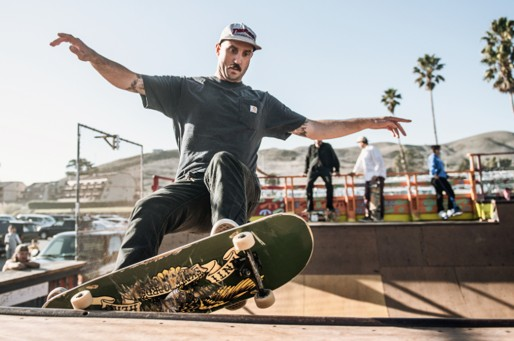

Skateboarding began in California in the late 1940s and 1950s when surfers wanted a way to ride on land, so they attached roller-skate wheels to wooden planks, calling them “sidewalk surfboards.” By the late 1950s, companies like Roller Derby started selling skateboards, and during the 1960s the sport gained attention with contests, magazines, and teams. In the 1970s, new polyurethane wheels made riding smoother, and skaters in drought-stricken California turned empty swimming pools into their playgrounds. The Zephyr Skate Team, or Z-Boys, helped transform skateboarding into a bold and creative style of its own. From those early experiments, skateboarding grew into a worldwide culture and eventually earned its place in the 2021 Tokyo Olympics.